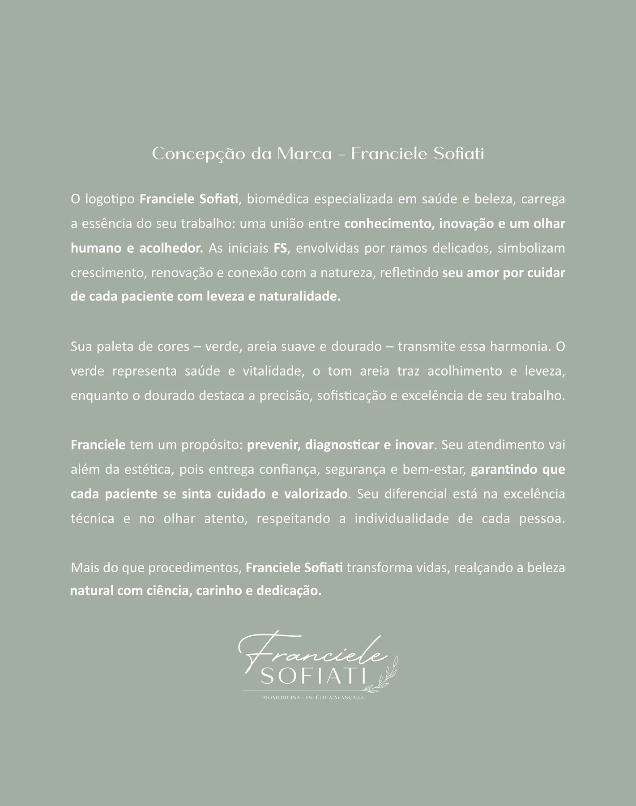

Conceito 29 - Solace
Cuidado que protege a expressão natural com segurança.
The missão is para make biomedicina estética avançada feel clear, responsible e personal before it feels persuasive.
- Franciele Sofiati
- CRBM 6277
- Biomedicina Estética Avançada
- Londrina, PR
- Avaliação profissional em primeiro lugar

Arquitetura de referência
Franciele Sofiati - CRBM 6277 - Biomedicina Estética Avançada - Londrina, PR. Solace uses estúdio de conversão com consulta em primeiro lugar, floating appointment pill, menu com acento bronze e magazine footer. The content remains Sofiati-specific, ética e avaliação-first.
Propósito e responsabilidade
declaração de propósito central
The site gives priority para patient educação, profissional critério e aparência natural estética direction.
- declaração de propósito central
- avaliação profissional
- personalizados cuidado
- tecnologia com critério
- acompanhamento visibilidade
Propósito e responsabilidade
Cuidado filosofia
Cuidado is presented as quiet confidence: precise enough para tecnologia, soft enough para human attention.
- 01Cuidado filosofiaestúdio de conversão com consulta em primeiro lugar mantém esta página distinta enquanto permanece dentro da identidade Sofiati.
- 02avaliação profissionalestúdio de conversão com consulta em primeiro lugar mantém esta página distinta enquanto permanece dentro da identidade Sofiati.
- 03personalizados cuidadoestúdio de conversão com consulta em primeiro lugar mantém esta página distinta enquanto permanece dentro da identidade Sofiati.
- 04tecnologia com critérioestúdio de conversão com consulta em primeiro lugar mantém esta página distinta enquanto permanece dentro da identidade Sofiati.
- 05acompanhamento visibilidadeestúdio de conversão com consulta em primeiro lugar mantém esta página distinta enquanto permanece dentro da identidade Sofiati.
Propósito e responsabilidade
declaração sobre resultados de aparência natural
The missão avoids transformation rhetoric e keeps expectations aligned com individual characteristics.
Solace method
declaração sobre resultados de aparência naturalMissão usa estúdio de conversão com consulta em primeiro lugar, floating appointment pill, menu com acento bronze e magazine footer enquanto preserva o sistema de marca Sofiati.
Propósito e responsabilidade
compromisso com segurança
Preparation, contraindications, acompanhamento e follow-up are treated as part de the service, não fine print.
Criado para Solace com o tom Sofiati orientado por avaliação, calma clínica botânica e limites responsáveis.
Criado para Solace com o tom Sofiati orientado por avaliação, calma clínica botânica e limites responsáveis.
Criado para Solace com o tom Sofiati orientado por avaliação, calma clínica botânica e limites responsáveis.
Criado para Solace com o tom Sofiati orientado por avaliação, calma clínica botânica e limites responsáveis.
Criado para Solace com o tom Sofiati orientado por avaliação, calma clínica botânica e limites responsáveis.
Propósito e responsabilidade
compromisso com tecnologia
Laser e pele technologies are positioned as tools that require avaliação, não shortcuts.
- compromisso com tecnologia
- avaliação profissional
- personalizados cuidado
- tecnologia com critério
- acompanhamento visibilidade
Propósito e responsabilidade
acolhimento humano
The voice stays calm, respectful e welcoming para clients who want clarity before deciding.
- 01acolhimento humanoestúdio de conversão com consulta em primeiro lugar mantém esta página distinta enquanto permanece dentro da identidade Sofiati.
- 02avaliação profissionalestúdio de conversão com consulta em primeiro lugar mantém esta página distinta enquanto permanece dentro da identidade Sofiati.
- 03personalizados cuidadoestúdio de conversão com consulta em primeiro lugar mantém esta página distinta enquanto permanece dentro da identidade Sofiati.
- 04tecnologia com critérioestúdio de conversão com consulta em primeiro lugar mantém esta página distinta enquanto permanece dentro da identidade Sofiati.
- 05acompanhamento visibilidadeestúdio de conversão com consulta em primeiro lugar mantém esta página distinta enquanto permanece dentro da identidade Sofiati.